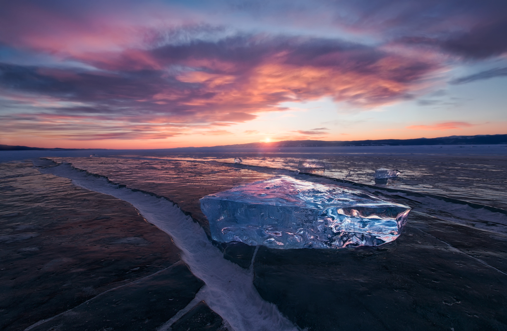
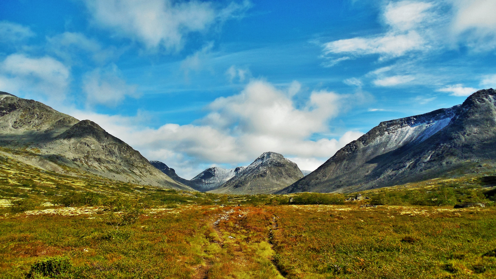
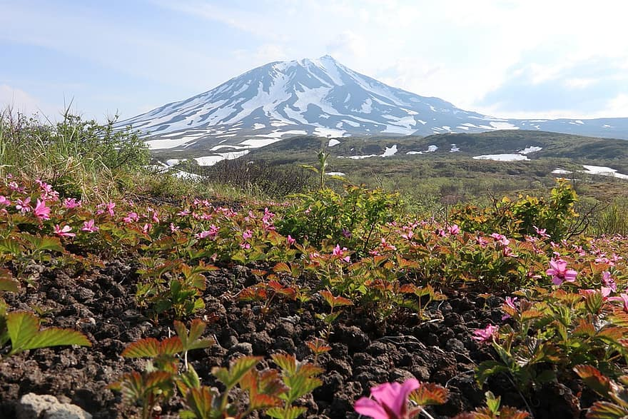

Россия — это сундук с сокровищами, которые можно перебирать бесконечно.
У нас
полно незабываемых мест от Выборга до Камчатки — пора пользоваться тем, что они
доступны безо всякой волокиты с визами.
Наша компания 20 лет на рынке, поэтому вы можете не совневаться, что ваш
отдых пройдёт на высшем уровне.
Озеро Байкал
На Байкале каждый найдет то, что ищет. Поселитесь на самом берегу священного озера-моря, накупайтесь и наешьтесь омуля. Прокатитесь на экскурсионном поезде по раритетной Кругобайкальской железной дороге. Познакомьтесь с нерпой — трогательным тюленем с круглыми глазками. Разгадайте шаманские тайны острова Ольхон. Сгоняйте в Аршан и испробуйте целебную силу минеральных источников. А если хотите в гости к снежной королеве, приезжайте на Байкал зимой. Покатайтесь на горных лыжах и коньках и полюбуйтесь синим, абсолютно прозрачным байкальским льдом. Когда замерзнете, согревайтесь бухлером — наваристым мясным бульоном со специями.
Хибины
Кольский полуостров — это Заполярье, до которого не нужно три дня скакать на оленях. Хлопаешь дверью машины, а
вокруг уже низкорослые северные березки, изумрудные озера и скалистые горы — самая середина Хибинских гор. Если
хотите романтики, дальше прокладывайте путь через тайгу и тундру пешком, с рюкзаком и фотоаппаратом.
Адреналином
вас обеспечит сафари на квадроциклах: будете штурмовать броды и подниматься к перевалам прямо на
четырех колесах. Если хочется приключений поспокойнее, приземляйтесь на уютной базе отдыха — единственной в
центре Хибин — и наслаждайтесь белыми ночами летом и полярным сиянием.
Гора Белуха

Белуха — самая высокая гора Сибири и что-то вроде отечественного Кайласа. Местные жители боятся и почитают
Белуху, потому что верят, что на ее вершине живет хозяин Алтая. Николай Рерих искал в этих краях ворота то ли в
Шамбалу, то ли в Беловодье, а его последователи до сих пор ловят здесь сигналы из космоса.
Восхождение на
мистическую гору доступно только хорошо подготовленным, зато к живописному Аккемскому озеру у
подножия доберется любой. От села Тюнгур — три дня ходу, а если пешком не хотите, присоединяйтесь к походу на
лошадях. Чтобы не ходить по одной и той же дороге, в обратный путь отправляйтесь через озеро Кучерлинское и реку
Кучерла — названия похожие, а впечатления неповторимые.
Выборг

Выборг не похож ни на один российский город. Среди узких улочек и островерхих шпилей витают североевропейская сдержанность и утонченность. Весь старый квартал Выборга можно пересечь за полчаса, но вы и не заметите, как пролетит целый день. Засекайте время по ветхой часовой башне и отправляйтесь топтать булыжные мостовые и разглядывать старинные дома. А на десерт оставьте таинственный Выборгский замок XIII века, стоящий на островке. Того и гляди из окна вылетит привидение, как в сказке Отфрида Пройслера.
Камчатка
На Камчатке трудно выбрать одно самое-самое место: там прекрасно везде. И все как будто неземное: бурлит Долина гейзеров, тихоокеанские волны набегают на черный пляж, беспокойно курятся вулканы. Хотите родиться заново — окунитесь в камчатские термальные источники под открытым небом. Поднимитесь на Авачинский вулкан, на обратном пути покормите печеньем сусликов, а потом подсмотрите за медвежьей рыбалкой на Курильском озере. Прогуляйтесь по лавовым полям у Острого и Плоского Толбачика, только заранее убедитесь, что вулканы сладко спят: камчатская природа настолько хороша, что может позволить себе любые капризы.